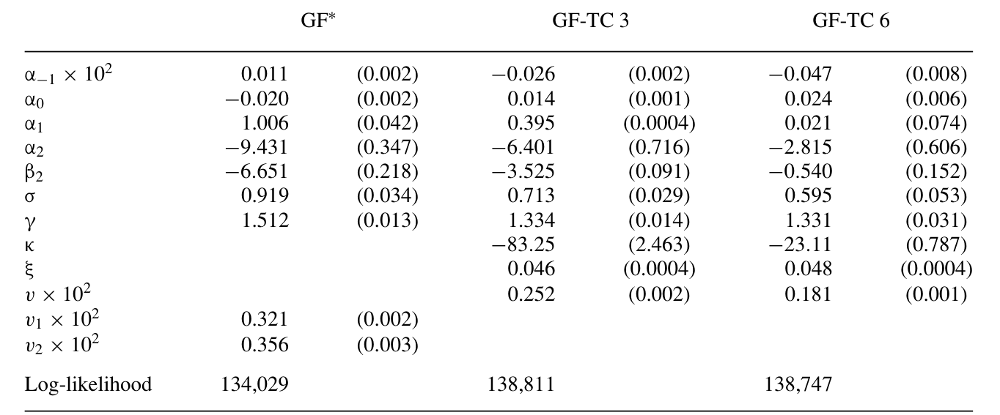
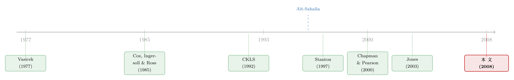

利率会不会「拐弯」？——一个被换了把尺子量出来的老问题
本文读的是 Takamizawa (2008, Review of Financial Studies)：短期利率的漂移项到底是不是非线性的？作者不再只盯着单一利率的时间序列，而是把利率期限结构的「横截面」也拉进估计——结论是一记漂亮的拆分：物理测度下的非线性漂移其实很脆弱（基本是线性的），但风险中性测度下的非线性漂移却是稳健而必要的，否则你解释不了高利率区间那一截「巨大的负利差」。
1 引言：一根「不肯发散」的利率
先抛一个看上去并不性感、却折磨了利率经济学家二十多年的问题：短期利率（the short rate）的漂移项 (drift)，到底长什么形状？
这件事为什么要紧？因为短期利率的漂移同时干着两份活：一份是刻画利率随时间的走势（时间序列维度），另一份是给利率衍生品、给整条期限结构定价（横截面维度）。漂移的形状错了，这两件事就都做不对。
而真正点燃这场争论的，是一个经验观察：利率有着近乎单位根 (near-unit root) 的高持续性，看上去像随机游走、随时会跑到天上去；可现实里它从来没有发散——再高的利率最后总会被拉回来。一个自然的解释是：漂移不是线性的。非线性漂移 (nonlinear drift) 允许利率在不同水平上以不同速度均值回复——在极高和极低处快速回复，在中间区域几乎不动。这恰好呼应了央行的行为：利率太高就压、太低就托，中间则放任自流（Aït-Sahalia, 1996, 对此有专门讨论）。
故事到这里很完美。问题是：这套「非线性」，真的能从数据里被识别出来吗？
2 一场打了二十年、没打出胜负的官司
自 Aït-Sahalia (1996) 用「参数模型要去匹配非参数估计出来的边际密度」这一招，论证出漂移必须是非线性的之后，支持的证据接踵而至：Stanton (1997) 发现非参数估计的漂移在大部分利率区间几乎为零、却在极高处急剧下降；Jiang (1998) 用边际密度与漂移-扩散函数之间的关系，也得到一个呈现非线性的漂移估计；Conley et al. (1997)、Ang and Bekaert (2002) 则分别从波动率弹性和区制转换 (regime switching) 的角度，给非线性背书。
但反方的火力同样凶猛，而且打的是「方法论」的要害。
Pritsker (1998) 指出，Aït-Sahalia (1996) 那个基于非参数的检验，由于利率高持续性导致检验统计量收敛极慢，会过度拒绝线性漂移的原假设。Chapman and Pearson (2000) 干脆做了一次蒙特卡洛实验：用一个线性漂移模型生成数据，再去估计漂移——结果估计量在极高利率处被系统性地向下偏、在极低处向上偏，凭空造出了「非线性」的假象。Durham (2003) 用模拟极大似然 (simulated ML) 发现，漂移里除了常数项之外的项对拟合几乎没有贡献；Jones (2003) 用贝叶斯 MCMC 进一步说，非线性不过是先验设定和模型误设、加上高频数据共同催生的产物。Li, Pearson, and Poteshman (2004) 则发现，一旦把「利率停留在某个预设区间内」这个条件加进估计，线性漂移就再也拒绝不掉了。
二十年下来，两边谁也没说服谁。作者一针见血地点出了症结：漂移的估计天生需要极长的时间跨度，而利率的高持续性让事情雪上加霜；更要命的是，非线性恰恰是在利率的极高和极低水平上识别的，而这两端的观测值本来就稀少。于是无论你有几十年的时间序列，极端区间的漂移形状都只能被极不精确地识别出来。
接着，一个自然的问题是：如果时间序列这口井已经快被榨干了，能不能换一口井打水？
3 真正关键的一步：把「横截面」请进来
这就是这篇论文的核心动作，也是它和前人所有工作的分水岭。
前人几乎都只用单一一条利率的时间序列去估漂移。而本文的思路是：通过进一步设定风险价格 (price of risk)，把短期利率的动态映射到整条期限结构上去——于是贴现债券收益率的横截面里，也藏着关于短端利率动态的信息。漂移必须同时和数据的时间序列维度、横截面维度相容，这个「双重约束」理应带来更精确的估计。
为什么横截面有信息？作者用一张图（论文的 Figure 1）讲清了直觉：把三月期、六月期欧洲美元利率相对一月期利率的利差 (yield spread) 画在一月期利率的水平上，你会看到——低到中等利率区间没什么规律，但在高利率处出现了巨大的负利差，六月期尤其明显。
这意味着什么？顺着无套利的逻辑往下推：
- 假设风险中性漂移 (risk-neutral drift) 随利率上升而迅速下降；
- 那么在风险中性世界里，高位的利率更可能往下走，这就压低了 \(\int_t^T r_u\,du\) 的增长速度；
- 而债券价格是 \(E^Q_t\!\left[\exp\!\left(-\int_t^T r_u\,du\right)\right]\)，于是高利率时债券「平均被贴现得更少」，到期收益率相对短端利率偏低；
- 收益率减短端利率，得到的正是巨大的负利差。
换句话说，那张图里高利率处的负利差，几乎是在直接朝你喊：风险中性漂移是非线性的，而且在高位均值回复得很快。短端数据本身，就「隐含」了一个理想的风险中性漂移设定。
这正是标题里那个 "implied by the short end" 的含义——不是你硬塞给模型一个非线性，而是短端期限结构的形状把它逼出来了。
4 模型：一个 CEV 短利率过程，和它的两副面孔
这篇论文有一套清楚的连续时间模型，值得一步步拆开。
第一步：物理测度下的短利率过程。 沿用 Aït-Sahalia (1996, 1999) 和 Conley et al. (1997) 的标准设定，短期利率服从一个带非线性漂移、且方差具有常弹性 (constant elasticity of variance, CEV) 的随机微分方程：
这里漂移函数 \(\mu(r)=\alpha_{-1}/r + \alpha_0 + \alpha_1 r + \alpha_2 r^2\)。倒数项 \(\alpha_{-1}/r\) 管的是极低利率处的快速回复，二次项 \(\alpha_2 r^2\) 管的是极高利率处的快速回复——两端的「非线性」就靠它们。
第二步：用无套利钉住风险价格。 作者把无套利条件取为「风险价格函数 \(\lambda(r)\) 在 \(\{r:\sigma(r)=0\}\) 上有界」，于是当 \(\sigma(r)=0\) 时风险溢价 \(\lambda(r)\sigma(r)=0\)。再假设物理漂移 \(\mu(r)\) 与风险中性漂移 \(\mu^Q(r)\) 具有同一参数形式（这个简约假设后面会被放松），通过下面这个恒等式联系起来：
$$\mu^Q(r) = \mu(r) - \lambda(r)\,\sigma(r).$$
这一步是整篇文章的枢纽：物理漂移不能随便取值，它被风险中性漂移和风险溢价共同约束着。这是只用时间序列数据永远做不到的事。
第三步：风险价格的两种设定。 在 CEV 框架下，为了让 \(\mu(r)\) 和 \(\mu^Q(r)\) 保持同样的函数形式，风险价格只能取这两种形式之一：
$$\lambda(r_t) = \lambda_2\, r_t^{2-\gamma}, \quad (1<\gamma\le 2)$$
$$\lambda(r_t) = \lambda_1\, r_t^{1-\gamma} + \lambda_2\, r_t^{2-\gamma}, \quad (0<\gamma\le 1)$$
对应地，风险中性过程就成了（以 \(1<\gamma\le2\) 为例）：
$$dr_t = \left(\alpha_{-1}/r_t + \alpha_0 + \alpha_1 r_t + \beta_2 r_t^2\right) dt + \sigma r_t^{\gamma}\, dW_t^Q,$$
其中 \(\beta_i \equiv \alpha_i - \sigma\lambda_i\)。聪明之处在于：实证里报告的是 \(\beta_i\) 而不是 \(\lambda_i\)——因为我们真正关心的，是 \(\mu(r)\) 和 \(\mu^Q(r)\) 这两条漂移曲线各自的形状。\(\alpha_2\) 决定物理漂移的非线性，\(\beta_2\) 决定风险中性漂移的非线性，两者之差就是风险溢价的来源。
第四步：把横截面解出来。 贴现债券价格 \(P(r_t,t,T)\) 满足标准无套利偏微分方程
$$\tfrac{1}{2}(\sigma r_t^{\gamma})^2 \frac{\partial^2 P}{\partial r_t^2} + \mu^Q(r_t)\frac{\partial P}{\partial r_t} + \frac{\partial P}{\partial t} - r_t P = 0,$$
边界条件 \(P(r_T,T,T)=1\)。麻烦在于，非线性漂移让这个 PDE 一般没有闭式解——这正是用期限结构数据的最大障碍。作者搬出 Takamizawa and Shoji (2003) 的解析近似：对非线性漂移和扩散函数做局部线性化，于是 PDE 可以解析求解，得到
$$\tilde{P}(r_t,\tau) = \exp\{-A(\tau;r_t) - B(\tau;r_t)\, r_t\}, \quad \tau = T-t,$$
收益率随之有闭式 \(\tilde{Y}(r_t,\tau) = \{A(\tau;r_t) + B(\tau;r_t) r_t\}/\tau\)。有了闭式收益率函数，整套估计才能在可接受的计算量内跑起来。
5 估计：让模型同时「对得上」时间序列和横截面
数据是 H-15 美联储统计发布里的一月、三月、六月期欧洲美元 (Eurodollar) 存款利率，周频（取每周三的观测）。估计样本是 1971 年 1 月 6 日—1999 年 12 月 29 日，共 1513 个观测；2000 年 1 月 5 日—2005 年 12 月 28 日 的 313 个观测留作样本外检验。作者还用 3、6、12 月期美国国债收益率（1959–2001）做了稳健性，结论大体一致。
估计方法是极大似然，密度被拆成两块：\(f_T\) 是短端利率时间序列行为的转移密度 (transition density)，用 Aït-Sahalia (1999, 2002) 的解析近似（截到一阶）算出；\(f_C\) 则是加在期限结构模型上的测量误差 (measurement error) 密度。目标函数是
$$\sum_t \left\{\ln f_T(r_t; r_{t-\Delta}, \theta_T) + \ln f_C(y_t; r_t, \theta_C)\right\},$$
其中 \(y_t = (y_{3M,t}, y_{6M,t})\)。测量误差还被允许有一阶自相关与同期相关——这一步看似技术细节，其实是为了防止 \(\mu(r)\) 和 \(\mu^Q(r)\) 被横截面维度过度拉扯，否则本不存在的非线性项会被硬生生「拟合」出来。
6 结果：答案在这里一分为二
现在来看那个反转。先用单一一月期利率的时间序列估 Eq (1)：
- \(\gamma\) 的估计是
1.31（标准误0.103），显著大于 1——这和 CKLS (1992) 等人「\(\gamma\) 介于 1 和 2 之间」的老结论一致。 - 但 \(\alpha_{-1}\) 和 \(\alpha_2\) 都估不准。\(\alpha_2\) 的估计是
−5.27，标准误却高达8.82。原假设 \(\alpha_{-1}=\alpha_2=0\) 的似然比统计量是0.67（p = 0.72, df = 2），完全拒绝不掉；甚至「漂移整个为零」的原假设也拒绝不掉（LR =5.36, p = 0.25, df = 4）。
这恰恰印证了前面那场二十年官司里反方的担忧：只靠时间序列，极端区间的非线性根本识别不出来。
接着，把横截面请进来（模型 GF*）。 故事立刻变了：
- \(\alpha_2\) 估计为
−7.09，显著了。 - \(\beta_2\) 估计为
−4.04，也显著——这正是引言里那条「高利率负利差」逻辑的兑现。 - 波动率参数 \((\sigma,\gamma)=(0.72,1.30)\)，和只用时间序列时的 $(0.73,1.31)$ 几乎不变。这说明波动率几乎完全由时间序列维度决定，也和「波动率对测度变换不变」这一事实吻合。
但真正关键的一步藏在 \(\alpha_2\) 为什么突然显著里。由 \(\lambda_2=(\alpha_2-\beta_2)/\sigma\) 且其估计为负，模型隐含一个正的期限溢价 (term premium)；为了让期限溢价为正，在 \(\sigma>0\) 下必须有 \(\alpha_2<\beta_2\)，再叠加横截面支持的 \(\beta_2<0\)，约束就变成了 \(\alpha_2<\beta_2<0\)。也就是说，\(\alpha_2\) 虽然是物理漂移里唯一不共享的参数、本该只听时间序列的，却被横截面通过期限溢价间接钉住了。
于是问题来了：这个被横截面「钉出来」的物理漂移，对时间序列本身是不是一种扭曲？
作者做了一个诚实的检验：把 \((\alpha_{-1},\alpha_0,\alpha_1,\alpha_2)\) 固定在横截面估出来的值上，只用时间序列重估 \((\sigma,\gamma)\)，再和无约束模型比对数似然。似然比统计量是 10.92（p = 0.03, df = 4）——在 5% 水平上被拒绝。结论很克制：用横截面约束去识别 \(\mu(r)\) 的形状，对时间序列来说并非没有代价。
至于倒数项 \(\alpha_{-1}\)，检验 \(\alpha_{-1}=0\) 的似然比只有 0.07，无论物理还是风险中性测度，都找不到低利率处快速回复的证据。
把这些拼起来，三句话的结论就成型了：
- 物理漂移的非线性是脆弱的——只有当非线性项被横截面强烈影响时它才出现，而这类情形相当受限；一般而言非线性项对时间序列的拟合贡献甚微。
- 风险中性漂移的非线性是稳健且必要的——靠那个二次项，高利率处的巨大负利差和低利率处的极小利差才能被一致地解释；若强行令 \(\alpha_{-1}=\beta_2=0\)，\(\mu^Q(r)\) 的斜率为负、利率在两端以恒定速度回复，那就既解释不了高利率的大负利差、也解释不了低利率的小利差。
- 去掉暂时性冲击后，结论 (ii) 依旧成立——在更高频（日频）的数据上，剔除掉日度观测里夹带的暂时性冲击后，非线性风险中性漂移仍然更优，只是非线性程度有所减弱。
如下方表所示，即便换到日频数据、控制掉暂时性冲击，风险中性漂移那一截「快速回复」的非线性也没有消失。

Table 6: presents the estimation results. The behavior of r is more mean
（关于「同一条收益率曲线、换一把尺子就翻案」这种事，利率期限结构里并不少见，可参见《波动率到底藏在哪里？》与《收益率曲线拟合得再好，也可能对波动率「充耳不闻」》。）
7 文献脉络
把这条线索捋直了看，会发现它其实是「短利率建模」与「非线性之争」两条河的合流。
最早是 Vasicek (1977) 给出线性漂移、常波动率的均衡期限结构，Cox, Ingersoll, and Ross (1985) 把它推进到一般均衡并引入平方根扩散。CKLS (1992) 用统一框架比较各种短利率模型，奠定了「\(\gamma\) 介于 1 与 2 之间」的经验事实。真正的转折点是 Aït-Sahalia (1996)：他用边际密度论证漂移必须非线性，从此点燃了 Stanton (1997)、Conley et al. (1997)、Jiang (1998)、Ang and Bekaert (2002) 这一串支持非线性的工作。
然后反转出现：Pritsker (1998)、Chapman and Pearson (2000)、Durham (2003)、Jones (2003)、Li, Pearson, and Poteshman (2004) 接连指出，所谓「非线性」很可能是检验过度拒绝、估计偏误、先验设定或模型误设造出来的幻觉。两派僵持不下，根子都在「只用单一利率时间序列、极端区间观测稀少」这一死穴上。
本文 (2008) 的位置，就在这个僵局的「侧门」：它不去和任何一方正面辩论时间序列能不能识别非线性，而是借 Takamizawa and Shoji (2003) 的解析近似把横截面接进来，结果给出了一个比「是或否」更细的答案——物理漂移基本线性、风险中性漂移确需非线性。

8 评论与延伸（Q&A + 研究方向）
(a) 几个可能的疑问
Q：这篇文章到底是支持非线性漂移，还是反对？
都不是，它把问题拆开了。物理测度下，它站在「线性派」一边——非线性项对时间序列拟合贡献甚微，\(\alpha_{-1}=\alpha_2=0\) 拒绝不掉。但风险中性测度下，它坚定支持非线性——没有那个二次项 \(\beta_2 r^2\)，就解释不了高利率处的大负利差。这种「分测度」的回答，正是它超越前人非此即彼之争的地方。
Q：用横截面信息，会不会只是把识别误差从一个地方搬到了另一个地方？
这是最该警惕的点，作者自己也承认了。他用一个似然比检验直接量化了「代价」：把横截面估出的物理漂移强加给时间序列，LR = 10.92（p = 0.03），在 5% 水平被拒绝。也就是说横截面识别出的 \(\mu(r)\) 形状，对时间序列并非无成本——这是诚实而不是回避。
Q：「物理漂移线性、风险中性漂移非线性」在经济上说得通吗？
说得通。两者之差是风险溢价 \(\lambda(r)\sigma(r)\)。风险中性漂移描述的是定价世界里利率的「等价」走势，它要去拟合债券价格的横截面，自然被期限溢价的形状约束；物理漂移描述真实世界的均值回复，那部分信息主要来自时间序列，而时间序列在极端区间又太稀疏。两条曲线服务的目标不同、信息来源不同，形状不一样反而合理。
Q：为什么单看时间序列时 \(\alpha_2\) 估不准，加了横截面就显著了？
因为加横截面后，\(\alpha_2\) 不再只听时间序列的话。通过 \(\lambda_2=(\alpha_2-\beta_2)/\sigma\) 和「期限溢价为正」的要求，它被锁进了 \(\alpha_2<\beta_2<0\) 这个区间。约束多了，估计的标准误自然下来了——但这也意味着它的「显著」一部分来自横截面强加的结构，而非时间序列本身的信号。
Q：低利率处的快速回复呢，倒数项 \(\alpha_{-1}\) 怎么样？
没找到证据。检验 \(\alpha_{-1}=0\) 的似然比只有 0.07，无论哪个测度都拒绝不掉。也就是说，这篇数据（样本内利率最低 0.03）支持的非线性，主要是高利率端的故事，低利率端那条「倒数项」并没有被点亮。考虑到样本最低才 3%，离零还远，这个结果并不意外。
Q：解析近似会不会成为结论的软肋？
这是合理的担心。Takamizawa and Shoji (2003) 的近似精度随到期期限 \(\tau\) 增大而下降，所以作者只用一、三、六月期这种短端数据，把误差压在可控范围内。换句话说，这篇文章的结论严格说是「短端期限结构隐含的非线性」，外推到长端（多因子才描述得了）需要另作论证。
(b) 几个可能的研究问题与提案
1. 把这套「横截面识别漂移」搬到公司债的信用利差期限结构上。 【经济故事】公司债的违约强度（default intensity）同样有一个漂移，且大家普遍怀疑它在信用恶化时高度非线性（危机时违约率快速攀升）。能不能像本文用国债利差识别短利率漂移那样，用不同期限的信用利差横截面去识别违约强度漂移的形状？ 【可行性】中。数据上 TRACE 加 Markit CDS 可以拼出按期限的信用利差面板；识别上需要一个 reduced-form 强度模型加无套利约束。难点是公司债流动性噪声远大于国债，测量误差结构要做得更细——这恰好是本文 \(f_C\) 那套自相关测量误差建模能借力的地方。
2. 外资持有人结构会不会改变风险中性漂移的非线性？ 【经济故事】本文把风险中性漂移的非线性归因于期限溢价的形状，而期限溢价又取决于谁在持有债券。如果某国国债的外资持有比例骤升（如被纳入全球指数），其期限溢价的状态依赖性应当改变，进而风险中性漂移的非线性程度也该随之移动。 【可行性】中偏低。需要一个有外资持有比例变化的自然实验（指数纳入是不错的候选），再在前后两段分别估本文这类模型比较 \(\beta_2\)。难点是结构断点和参数稳定性的统计推断。（这条线索与《一起涨跌，不等于一起被定价》的国债定价视角天然相邻。）
3. 用本文的「分测度」诊断重做 Chapman-Pearson 式的蒙特卡洛。 【经济故事】既然本文声称横截面能识别出时间序列识别不了的东西，那就该反过来问：如果真实数据生成过程是线性物理漂移 + 非线性风险中性漂移，本文的估计程序会不会在物理漂移上也造出虚假非线性？ 【可行性】高。纯模拟实验，不需要新数据，把本文的 DGP 设定清楚跑蒙特卡洛即可。这是对本文识别可信度最直接、最 doable 的一次压力测试。
4. 把暂时性冲击显式建模，而不是「去掉」。 【经济故事】本文在日频数据里用一阶自相关测量误差来「吸收」暂时性冲击。但这些冲击本身（如货币市场流动性扰动）可能含有信息。能不能把它建成一个独立的快速均值回复因子，看它是否吸走了一部分被误判为「非线性漂移」的变动？ 【可行性】中。需要一个双因子（持久 + 暂时）短利率模型，估计负担上升，但本文的 ML 框架可以直接扩展。识别靠的是两因子在不同频率上的方差贡献差异。
我的判断
这篇文章最漂亮的地方，是它没有去赢那场二十年的辩论，而是换了个问法。当所有人都在「时间序列能不能识别非线性」这一个坑里反复拉锯时，它把横截面这口新井打了下去，结果逼出了一个比「是/否」更有信息量的答案：物理漂移线性、风险中性漂移非线性。从方法上看，把 Takamizawa-Shoji 近似嵌进 ML、同时拟合 \(f_T\) 和 \(f_C\)，是一套干净利落的工程。
但我有两点不放心。其一，正如作者自己用 LR = 10.92 诚实揭示的，横截面识别出的物理漂移对时间序列有代价——这等于承认 \(\mu(r)\) 的形状部分是被横截面结构「强加」的，那么风险中性漂移那个看似稳健的 \(\beta_2\)，会不会也部分来自测量误差设定和单因子假设？测量误差被建成自相关结构，本意是防止过度拟合，但它同时也成了一个吸收了大量横截面残差的「黑箱」，结论对它的设定有多敏感，文中交代得不够。其二，单因子假设让结论严格只适用于短端；而真正令人头疼的非线性争议，往往发生在覆盖长端的全曲线上。
后续我最想看到的，是把这套识别框架放到一个多因子期限结构里去——看看当中端、长端利率也被请进横截面后，风险中性漂移的非线性是被进一步坐实，还是像物理漂移那样、一经多源数据交叉验证就悄悄缩水。
参考文献
Aït-Sahalia, Y. (1996). Testing Continuous-Time Models of the Spot Interest Rate. Review of Financial Studies 9, 385–426.
Aït-Sahalia, Y. (1999). Transition Densities for Interest Rate and Other Nonlinear Diffusions. Journal of Finance 54, 1361–95.
Aït-Sahalia, Y. (2002). Maximum-Likelihood Estimation of Discretely Sampled Diffusions: A Closed-Form Approximation Approach. Econometrica 70, 223–62.
Ang, A., and G. Bekaert (2002). Short-Rate Nonlinearities and Regime Switches. Journal of Economic Dynamics and Control 26, 1243–74.
Chan, K. C., G. A. Karolyi, F. A. Longstaff, and A. B. Sanders (1992). An Empirical Comparison of Alternative Models of the Short-Term Interest Rate. Journal of Finance 47, 1209–27.
Chapman, D. A., and N. D. Pearson (2000). Is the Short-Rate Drift Actually Nonlinear? Journal of Finance 55, 355–88.
Conley, T. G., L. P. Hansen, E. G. J. Luttmer, and J. A. Scheinkman (1997). Short-Term Interest Rates as Subordinated Diffusions. Review of Financial Studies 10, 525–77.
Cox, J. C., J. E. Ingersoll Jr., and S. A. Ross (1985). A Theory of the Term Structure of Interest Rates. Econometrica 53, 385–407.
Durham, G. B. (2003). Likelihood-Based Specification Analysis of Continuous-Time Models of the Short-Term Interest Rate. Journal of Financial Economics 70, 463–87.
Jiang, G. J. (1998). Nonparametric Modeling of US Interest Rate Term Structure Dynamics and Implications on the Prices of Derivative Securities. Journal of Financial and Quantitative Analysis 33, 465–97.
Jones, C. S. (2003). Nonlinear Mean Reversion in the Short-Term Interest Rate. Review of Financial Studies 16, 793–843.
Li, M., N. D. Pearson, and A. M. Poteshman (2004). Conditional Estimation of Diffusion Processes. Journal of Financial Economics 74, 31–66.
Pritsker, M. (1998). Nonparametric Density Estimation and Tests of Continuous Time Interest Rate Models. Review of Financial Studies 11, 449–87.
Stanton, R. (1997). A Nonparametric Model of Term Structure Dynamics and the Market Price of Interest Rate Risk. Journal of Finance 52, 1973–2002.
Takamizawa, H., and I. Shoji (2003). Modeling the Term Structure of Interest Rates with General Short-Rate Models. Finance & Stochastics 7, 323–35.
Vasicek, O. A. (1977). An Equilibrium Characterization of the Term Structure. Journal of Financial Economics 5, 177–88.